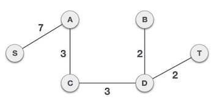

GIỚI THIỆU
Cây khung là gì?
Trong đồ thị vô hướng và liên thông G = (V, E), cây khung là một đồ thị con là cây bao gồm tất cả các đỉnh của G, với số cạnh tối thiểu có thể có. Một đồ thị có thể có một số cây khung. Chi phí của cây khung là tổng trọng số của tất cả các cạnh trong cây.
Cây khung nhỏ nhất là gì?
Cây khung nhỏ nhất (MST) hoặc cây khung có trọng số nhỏ nhất là một tập hợp con của các cạnh của đồ thị có hướng và liên thông với nhau, có trọng số cạnh nối tất cả các đỉnh với nhau, không có bất kỳ chu trình nào và với tổng trọng số cạnh nhỏ nhất có thể. Đó là, nó là một cây khung có tổng trọng số các cạnh càng nhỏ càng tốt. Số cạnh trong MST: V-1 (V - không có đỉnh trong Đồ thị).
Tìm hiểu →Thuật toán Prim và Kruskal
Thuật toán Kruskal's
Thuật toán của Kruskal là tìm cây khung nhỏ nhất dựa trên thuật toán tham lam (Greedy). Thuật
toán
Kruskal xem đồ thị như là một rừng cây và mỗi nút là một cây riêng lẻ trong rừng. Thuật toán
Kruskal không phụ thuộc vào điểm bắt đầu. Một cây kết nối với cây khác nếu và chỉ nếu cây này có
trọng số (weight) nhỏ nhất trong số tất cả các cây đã tìm được và không vi
phạm các đặc điểm của Cây khung nhỏ nhất (MST) – đã được giới thiệu ở trên.
Để hiểu thuật toán Kruskal, mời bạn theo dõi ví dụ sau:

Bước 1: Sắp xếp tất cả các cạnh theo trọng số tăng dần
Bước tiếp theo là tạo một tập các cạnh và trọng số và sắp xếp chúng theo thứ tự tăng dần về trọng số. (Giá trị trọng số là số hiển thị bên cạnh các cạnh trong hình minh họa trên.)
Bước 2: Thêm một cạnh có trọng số thấp nhất
Bây giờ chúng ta bắt đầu thêm các cạnh vào đồ thị bắt đầu từ cạnh có trọng số thấp nhất. Tại bất cứ thời điểm nào, chúng ta cũng cần kiểm tra các thuộc tính của cây khung có còn được duy trì hay không. Trong trường hợp khi thêm một cạnh mà làm phá vỡ thuộc tính của cây khung, thì chúng ta cần cân nhắc việc không thêm cạnh đó vào đồ thị.
Trọng số nhỏ nhất trong hình là 2 và đó là các cạnh là B,D và D,T. Do đó chúng ta thêm hai cạnh
này vào. Việc thêm hai cạnh này không vi phạm các đặc điểm của cây khung do đó chúng ta có thể
tiếp tục lựa chọn cạnh tiếp theo.
Trọng số tiếp theo là 3 và đó là các cạnh A,C và C,D. Do đó chúng ta thêm hai cạnh này.

Trọng số tiếp theo trong hình là 4 và chúng ta thấy rằng khi thêm nó vào đồ thị sẽ tạo nên một chu trình trong đồ thị. Như hình minh họa:

Do đó chúng ta bỏ qua trọng số này. Tiến trình của chúng ta sẽ bỏ qua/tránh việc thêm các cạnh mà khi thêm cạnh đó vào sẽ tạo nên một chu trình trong đồ thị.

Tiếp theo với hai trọng số 5 và 6, chúng ta cũng thấy rằng chúng cũng tạo nên một chu trình. Do đó chúng ta bỏ qua hai trọng số này và chuyển tới trọng số tiếp theo.
Bây giờ đồ thị của chúng ta chỉ còn một nút để thêm vào. Giữa hai cạnh có trọng số lần lượt là 7 và 8, chúng ta thêm cạnh có trọng số nhỏ hơn là 7.
Bằng việc thêm cạnh S,A chúng ta đã có một cây khung nhỏ nhất theo thuật toán của Kruskal.
Thuật toán Prim's
Thuật toán Prim để tìm cây khung nhỏ nhất (giống như thuật toán Kruskal) sử dụng thuật toán Tham
lam. Thuật toán Prim có một số điểm tương đồng với các thuật toán về tìm đường đi ngắn nhất.
Thuật toán Prim trái ngược với thuật toán Kruskal, coi các nút như một cây riêng và tiếp tục
thêm các nút mới vào cây khung từ đồ thị đã cho. Thuật toán Prim phụ thuộc vào điểm bắt đầu.
Để so sánh với giải thuật Kruskal và để hiểu giải thuật Prim sâu hơn, chúng ta sẽ sử dụng cùng
một ví du như trong giải thuật Kruskal:
Bước 1: Chọn một nút bất kỳ để làm nút gốc
Giả sử chúng ta chọn nút S làm nút gốc với thuật toán Prim. Chúng ta có thể chọn tùy ý bất kỳ nút nào khác để làm nút gốc.
Bước 2: Kiểm tra các cạnh còn lại và chọn một cạnh có trọng số nhỏ nhất
Sau khi chọn nút gốc S, chúng ta thấy rằng S,A và S,C là hai cạnh có trọng số tương ứng là 7 và 8. Chúng ta chọn cạnh có trọng số nhỏ hơn là S,A.

Bây giờ, cây S-7-A được xem như là một nút và chúng ta kiểm tra tất cả các cạnh còn lại bắt đầu từ nút này. Chúng ta tiếp tục chọn cạnh có trọng số nhỏ nhất và thêm nó vào trong cây.
Sau bước này tạo nên cây S-7-A-3-C. Bây giờ chúng ta lại coi đó là một nút và kiểm tra tất cả các cạnh còn lại và sẽ chỉ chọn cạnh có trọng số nhỏ nhất. Trong ví dụ này là cạnh C-3-D có trọng số thấp nhất.
Sau khi thêm nút D vào cây khung, bây giờ chúng ta còn hai cạnh mà có cùng trọng số: D-2-T và D-2-B. Do đó chúng ta có thể thêm một trong hai cạnh. Tuy nhiên, bước tiếp theo sẽ lại thêm cạnh có trọng số 2 còn lại. Dưới đây là hình minh họa sau khi đã thêm hai cạnh.
Chúng ta có thể thấy rằng cây khung nhỏ nhất của cùng một đồ thị sử dụng hai thuật toán khác nhau là tương tự.
– Theo Tutorialspoint –
Tổng kết
Ứng dụng
Về cơ bản cây khung được sử dụng để tìm các đường ngắn nhất để kết nối tất cả các nút trong một Graph. Các ứng dụng phổ biến của cây khung là:
- Lập kế hoạch mạng dân sự
- Giao thức định tuyến mạng máy tính
- Cluster Analysis
Sự khác biệt giữa hai thuật toán
Cả thuật toán của Prim và Kruskal đều tìm ra Cây khung nhỏ nhất và tuân theo phương pháp Giải quyết vấn đề theo thuật toán Tham lam, nhưng có một vài điểm khác biệt lớn giữa chúng. Để tìm hiểu rõ hơn mời các bạn xem bảng so sánh.